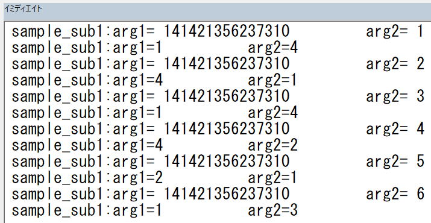
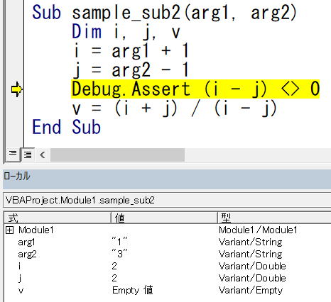
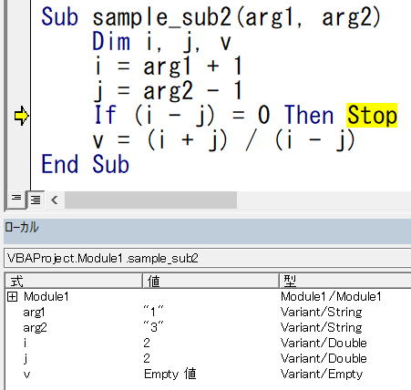

VBEの使い方：デバッグ
VBE(Visual Basic Editor)は、VBAで使われるコードエディタ、コンパイラ、デバッガ、その他の開発支援ツールが統合された開発環境です。
ここではVBA開発で、重要かつ避けて通れないデバッグについて説明します。。
実行、中断、リセット（停止）
アイコンまたはショートカットを使ったほうが良いでしょう。
VBA実行中はアイコンがクリックできない状態の場合が多いので、ショートカットを使ったほうが良いでしょう。
ショートカットCtrl+Breakは、「Esc」キーで代替えできます。
VBAが高速に動作している途中では、「Esc」キーで簡単に中断できない場合があります。
そのような場合は、まずは「Esc」キーを複数回連打してください。
それでも中断しない場合は、タスクバーのエクセルとVBEを切り替えながら、かつEscを連打してみてください。
また、VBEが操作可能な場合は、万一のためにVBAソースをCtrl+Cでメモ帳等にコピペすることを試みてみましょう。
なにより、
VBA実行前には必ずエクセルを保存しておきましょう。
モジュールレベル変数はリセットされます。
ショートカットは無いので、キーボード操作ではEsc中断後に「終了」を選んでください。
ステップ実行
良くあることです、と言いますか、書いたマクロが一発で正しく動作することの方が少ないと言っても良いでしょう。
まずは結果をよく見て、不正の原因となるVBAコードを見つける事が重要です。
しかし、VBAコードをいくら眺めていても原因が分からない、これは普通に良くあることです。
このような場合は、VBAをステップ実行して原因を突き止めましょう。
実行中のプロシージャーから呼び出している先のプロシージャーやプロパティの内部にも入ります。
※動きを見るために処理は意味のない単純なコードにしています。
ステップインとは違い、プロシージャの中に入るのではなく、プロシージャ呼び出しをステップ実行します。
実行中のプロシージャーから呼び出している先には入りません。
当該プロシージャーを1ステップずつ進みます。
※動きを見るために処理は意味のない単純なコードにしています。
ステップオーバーすることでステップインに比べて時間短縮ができます。
ステップイン実行中または中断している時に、
当該プロシージャーの残り部分についてステップでの確認が必要ないときに使います。
これを使うことで、
例えば大きなループのようなVBAコードを一気に飛ばしてその先へ進むことができます。
これは、
停止するステートメントにブレークポイントを設定し実行F5したことと同じことになります。
実行を停止する必要がなくなった場合は、ブレークポイントを解除します。
ブレークポイントを設定または解除する行に入力カーソルを置き、
または、インジケーターをクリックします。
呼び出し履歴
プロシージャから別のプロシージャを呼び出すと、呼び出されたプロシージャも一覧に追加されます。
呼び出されたプロシージャは、実行が呼び出し元のプロシージャに戻ったときに一覧から削除されます。
最初に起動したプロシージャーから現在のプロシージャーまでの呼び出し履歴が表示されている事になります。
プロシージャーを選択して「表示」をクリックすると、選択したプロシージャー移動します。
ローカルウィンドウの内容は、移動した先のプロシージャーの変数に変わります。
再度F8等で進めた時は、再び実行中の変数の表示に戻ります。
※呼び出し元の変数の確認方法
VBAの実行に問題がある場合、当該プロシージャーだけの問題ではなく、
呼び出し元で既に間違った処理が行われている場合が多々あります。
このような場合には呼び出し履歴を活用して原因を突き止めてください。
VBA実行途中の変数の状態を確認
Sub sample()
Dim i, r2
r2 = Sqr(2) * 10 ^ 14
For i = 1 To Len(r2) - 1
Call sample_sub1(r2, i)
Next
End Sub
Sub sample_sub1(arg1, arg2)
Dim i, j
i = Mid(arg1, arg2, 1)
j = Mid(arg1, arg2 + 1, 1)
Call sample_sub2(i, j)
End Sub
Sub sample_sub2(arg1, arg2)
Dim i, j, v
i = arg1 + 1
j = arg2 - 1
v = (i + j) / (i - j)
End Sub
イミディエイトウィンドウで、
しかし、そもそも変数i,jは?、引数arg1,arg2は?
これらをまとめてみたい時は、ローカルウィンドウが便利です。
しかし、そもそも呼び出し元の「sample_sub1」の変数はどうなっているの?
これはローカルウィンドウで見ることができません。
「呼び出し履歴」でどこからよびだされたかは必ず確認しましょう。
ただし、
「sample_sub2」の変数表示が消えてしまい、両方を同時に確認することはできないのが少々不便です。
しかし、カーソルを移動すると表示は消えていますますので、
多くの変数を確認したり、比較したりという用途には向きません。
操作したプロシージャーの変数として追加されます。
「対象」をみることで、どのプロシージャーの変数かを確認することができます。
条件を判定する位置を指定できないので、少々使いづらいかもしれません。
この例では、
「i=j」の指定では、初期値0で成立してしまうので、別の式が必要になります。
プロシージャーと変数の動きを確認し、そもそもの原因を特定していきます。
ここでの原因は、
sampleで作成した、「141421356237310」
sample_sub1で2桁ずつ取り出し、6,7桁目「13」
sample_sub2で、+1,-1した結果が「2,2」となり、(2-2)=0
これにより0除算が行われたという事になります。
もちろん、今回のVBAは全く意味がな言事は、再度言っておきます。
Debug.Print
イミディエイトウィンドウにテキストを出力します。
メソッド実行後は、イミディエイトウインドウの内容は改行されます。
;（セミコロン）に続けて書かれた変数・定数・式の値は、改行されずに表示されます。
,（カンマ）に続けて書かれた変数・定数・式の値は、一定も字数間隔をあけて表示されます。
Tab(n)で列番号（出力位置）を指定できます。
エラー停止した時点では、既に変数が書き換えられていて、原因がはっきりしない場合も多々あります。
このような場合には、
変数の値をイミディエイトウィンドウに順次出力していくことで、その変遷を確認します。
Sub sample_sub1(arg1, arg2)
Debug.Print "sample_sub1:"; "arg1="; arg1, "arg2=";
arg2
Dim i, j
i = Mid(arg1, arg2, 1)
j = Mid(arg1, arg2 + 1, 1)
Call sample_sub2(i, j)
End Sub
Sub sample_sub2(arg1, arg2)
Debug.Print "sample_sub2:"; "arg1="; arg1, "arg2="; arg2
Dim i, j, v
i = arg1 + 1
j = arg2 - 1
v = (i + j) / (i - j)
End Sub

Debug.Assert
式がFalseとなった時にVBAが中断します。
開発環境でのみ動作します。
プロジェクトをパスワード保護した場合は、Debug.Assertは動作しません。
その条件を満たさなくなった時にVBAを中断したい場合に使います。
Sub sample_sub2(arg1, arg2)
Dim i, j, v
i = arg1 + 1
j = arg2 - 1
Debug.Assert (i - j) <> 0
v = (i + j) / (i - j)
End Sub

IFステートメント + Stopステートメントを使う事で、同様の事は可能です。
Sub sample_sub2(arg1, arg2)
Dim i, j, v
i = arg1 + 1
j = arg2 - 1
If (i - j) = 0 Then Stop
v = (i + j) / (i - j)
End Sub

デバッグの最後に
動作テストと動作不具合のデバッグに費やされる時間の方が長いというのは良くあることです。
もちろん、一発で正しく動作する場合もあるし、デバッグ時間の方がはるかに長くなる場合もあります。
従って、このデバッグ時間は、VBA開発の総時間に大きく影響します。
同じテーマ「マクロVBA入門」の記事
VBEの使い方：VBE画面の全体説明
VBEの使い方：ツールのオプション設定
VBEの使い方：ツールバー
VBEの使い方：右クリックメニューとヘルプ
VBEの使い方：ショートカットキーとコード編集
VBEの使い方：イミディエイト ウィンドウ
VBEの使い方：ローカル ウィンドウ
VBEの使い方：ウォッチ ウィンドウ
VBEの使い方：オブジェクト ブラウザー
VBEの使い方：デバッグ
新着記事NEW ・・・新着記事一覧を見る
VBA100本ノック 100本目：WEBから100本ノックのリストを取得｜VBA練習問題（3月3日）
VBA100本ノック 99本目：自動席替え（行列と前後左右が全て違うように）｜VBA練習問題（3月2日）
VBA100本ノック 98本目：席替えルールが守られているか確認｜VBA練習問題（3月1日）
VBA100本ノック 97本目：Accessデータを取得（グループ集計）｜VBA練習問題（2月27日）
VBA100本ノック 96本目：Accessデータを取得（マスタ結合&抽出）｜VBA練習問題（2月26日）
VBA100本ノック 95本目：図形のテキストを検索するフォーム作成｜VBA練習問題（2月24日）
VBA100本ノック 94本目：表範囲からHTMLのtableタグを作成｜VBA練習問題（2月23日）
VBA100本ノック 93本目：複数ブックを連結して再分割｜VBA練習問題（2月22日）
VBA100本ノック 92本目：セルの色を16進で返す関数｜VBA練習問題（2月20日）
VBA100本ノック 91本目：時間計算（残業時間の月間合計）｜VBA練習問題（2月19日）
アクセスランキング ・・・ ランキング一覧を見る
1.最終行の取得（End,Rows.Count）｜VBA入門
2.RangeとCellsの使い方｜VBA入門
3.変数宣言のDimとデータ型｜VBA入門
4.マクロって何？VBAって何？｜VBA入門
5.Range以外の指定方法（Cells,Rows,Columns）｜VBA入門
6.セルのコピー&値の貼り付け（PasteSpecial）｜VBA入門
7.繰り返し処理（For Next)｜VBA入門
8.セルに文字を入れるとは（Range,Value）｜VBA入門
9.マクロはどこに書くの（VBEの起動）｜VBA入門
10.とにかく書いてみよう（Sub,End Sub）｜VBA入門
このサイトがお役に立ちましたら「シェア」「Bookmark」をお願いいたします。
記述には細心の注意をしたつもりですが、
間違いやご指摘がありましたら、「お問い合わせ」からお知らせいただけると幸いです。
掲載のVBAコードは動作を保証するものではなく、あくまでVBA学習のサンプルとして掲載しています。
掲載のVBAコードは自己責任でご使用ください。万一データ破損等の損害が発生しても責任は負いません。